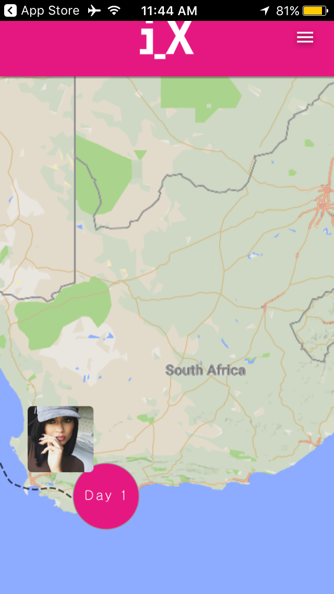
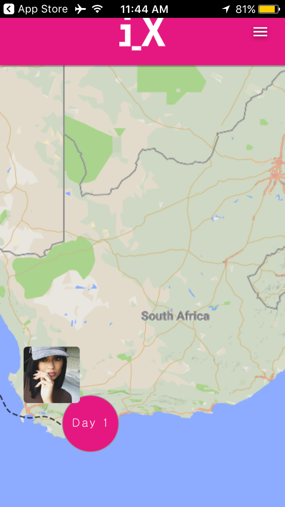

P O R T F O L I O
.jpg)

GOOGLE DESIGN SPRINT
 

The task: complete a Google Sprint with a prototype for a solution to the question "What can be improved about the iX academic experience" in four days.
I worked alongside another Product Manager and two UX Designers as we went through the Google Sprint process of formulating "How Might We"s (HMW), working through crazy 8 idea formulation, paper screen flows, usability testing, and Sketch/Marvel prototyping.
Collectively we decided to focus on creating a prototype for a comprehensive guide (like an interactive syllabus) in the form of a journey in an app. Assignments would be provided on the app, and as students complete assignments they can check-off the items. Once all items in a day are completed, they can travel to the next day's assignments.
iX CAPSTONE - LETSGO APP
The task: take a product from idea conception to launching a Minimum Viable Product with Lean Startup methodology in 3 weeks.
I, alongside my project partner Nick Lurie, identifed a problem that I was facing at the time: I wanted to hike Mt. Kilimanjaro, but I could not find a friend who wanted to hike with me. From this idea, we started to ask other people about their own life experiences to identify if there is indeed a consumer need for the product. One of the most valuable lessons that I learned throughout this process was to be agile and able to pivot from one idea to another based on data collected and observed behaviors. That being said, we found that not many people could relate to a problem like mine - but the majority of people did mention that they had a hard time finding friends to do outdoor recreational activities with.
With an evolved product idea, Nick and I got to work identifying customer painpoints and problems that potential customers face everyday whenever they desire to do a recreational activity outdoors. Through the process, I learned that it is very beneficial (and can save a lot of money) to spend a lot of time in "problem space" making sure that the product idea is actually something that could make a consumers' life easier.
After that, we transitioned to "solution space" and deciding upon product features that would make the product work. During this time, we also worked on market sizing and determing financial feasability if we were to pursue the idea. With this information, it was time to launch an MVP to make sure the assumptions that we had sought to validate in the beginning were, in fact, valid.
After we launched a landing page as an MVP, we added a ghost "sign up" button and linked it to event tracking with Google Analytics to see if people were interested in downloading our product concept. Since we were pressed for time, we were not able to gather sufficient data before creating our prototype - but for the purpose of learning I developed a very rough Marvel prototype to present at the end of our course.
To see the work produced in three weeks, take a look at the slideshow below. The website and prototype links in slides 21 and 23 work (just click the computer screen and words that say "App Prototype")
BARCLAYS ALIENS INTERNSHIP
The 2 projects: develop the Younglings youth-pipeline program in preperation for future expansion, and work with management consulting interns to create a financial inclusion pilot specifically relating to stokvels and burial insurance policies.
For my first project, I was tasked with reaching out to Cape Town startups and SMEs to discuss the posibility of creating a seperate group entity that would provide students in the Younglings program with real-world experience to build a one-page resume. Over the course of four weeks, I compiled an extensive list of potential partners and scheduled collaborative meetings with some of these companies. In order to understand the tech startup culture in South Africa better, I also reached out to influencial people within the industry to gain insight as to how Younglings could anwser the problem that many tech startups face: recruitment for software development talent. Ultimately, what I did during the month was initiate conversations with numerous potential partners to lay the foundation necessary to bring the vision of an entity affiliated with Younglings to fruition, while launching the Younglings' social media campaign by working directly with Younglings.
For my second project, I worked as part of a management consulting team to identify the potential for Barclays Africa/ABSA to penetrate the stokvel savings account market and burial insurance market in South Africa. My role was mostly focused on interpereting the research that the other four consultants gathered, and determining how Barclays/ABSA might form a pilot based on the research-backed recommendations. In one week I developed an app prototype that would provide financial transparency regarding burial insurance policies and stokvels to individuals in local townships, as smartphone ownership in townships is increasing very rapidly. I designed the app with simplicity in mind, while trying to utilize the technological resources that Barclays/ABSA already provides to customers (ie online claim forms), in order to provide a tech banking experience that is relevant to life in townships. Additionally, financial inclusion is a main focus for Barclays Africa/ABSA moving forward, so as a side project (in just one day) I created a very basic example of a website that ABSA could utilize to promote financial literacy. Since the website I produced is only meant to showcase ideas on how to make financial literacy more obtainable to people living in townships, the buttons do not work and the HTML/CSS and content would all be improved.